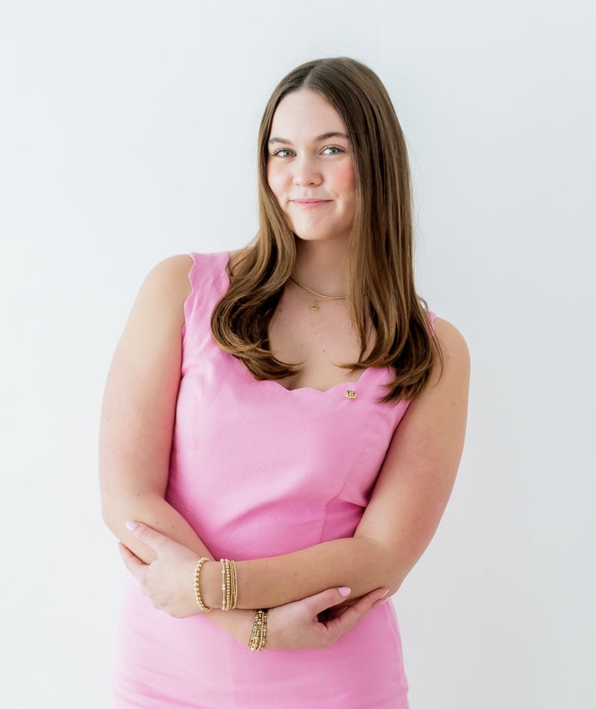
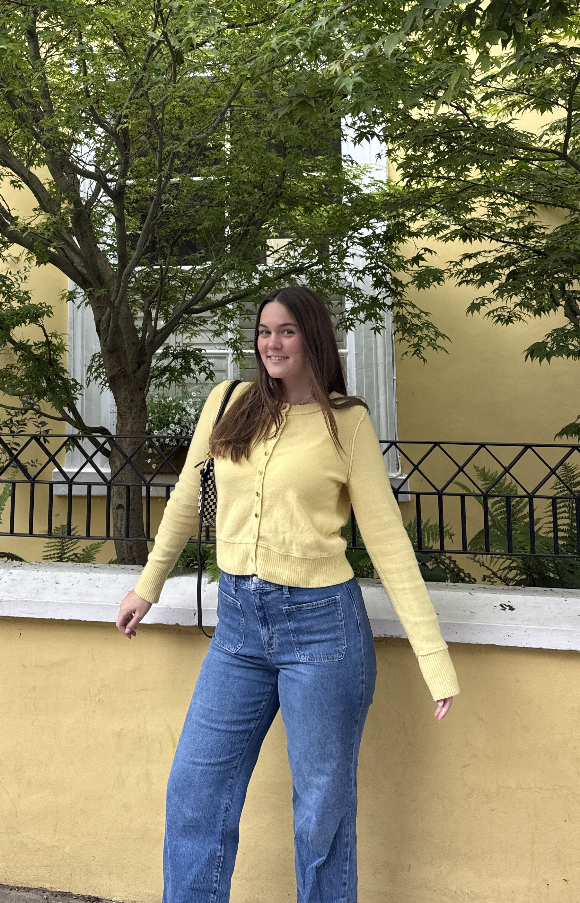

Design Projects
Created visual projects using branding, layout, and design principles to communicate ideas across different audiences.
View Design Projects →Texas Christian University Strategic Communication Student


I’m AJ Morris, a junior at Texas Christian University studying Strategic Communication and Digital Culture & Data Analytics. I’m originally from Los Angeles, California, but TCU has quickly become a place I’m proud to call home. I love cheering on the Frogs, being involved on campus, and finding creative ways to connect with people. I’m especially interested in sports, storytelling, marketing, and building communities around the things people care about.
Building relationships, leading teams, pitching ideas, planning events, and connecting with people through thoughtful communication and follow-up.
Building and editing digital projects using HTML and CSS while continuing to grow my technical skills.
Creating clear, engaging stories and messages for different audiences across writing, content, and strategic communication.
Created visual projects using branding, layout, and design principles to communicate ideas across different audiences.
View Design Projects →Developed writing from academic projects to inform, engage, and connect with different audiences.
View Writing Samples →Conducted research on audiences, media, and communication trends to turn information into clear insights and stronger strategic decisions.
View Research Projects →The best way to reach me is by email.